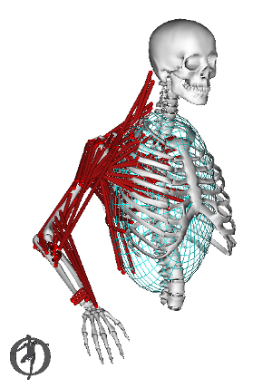

Real-time model for shoulder and arm simulation
DAS3 is the third generation of the Dynamic Arm Simulator, a real-time simulation of a musculoskeletal model of the shoulder and arm. The arm simulator is developed as part of the NIH contract “Brain-Controlled Hybrid Functional Electrical Stimulation”, led by Dr. Robert F. Kirsch at Case Western Reserve University.
When used together with a suitable visualisation environment, the DAS3 model can provide a virtual reality tool for testing interventions that restore function to the paralysed arm, such as functional electrical stimulation (FES).
Please cite this paper: Chadwick, E., Blana, D., Kirsch, R., & Bogert, A. van den. (2014). Real-Time Simulation of Three-Dimensional Shoulder Girdle and Arm Dynamics. IEEE Transactions on Biomedical Engineering, 61(7), 1947-1956. doi:10.1109/TBME.2014.2309727
Ton van den Bogert (a.vandenbogert@csuohio.edu), Dimitra Blana (d.blana@keele.ac.uk), Ed Chadwick (e.k.j.chadwick@keele.ac.uk)
Case Western Reserve University, all rights reserved.

Contents
Manual created on 25-Jan-2016